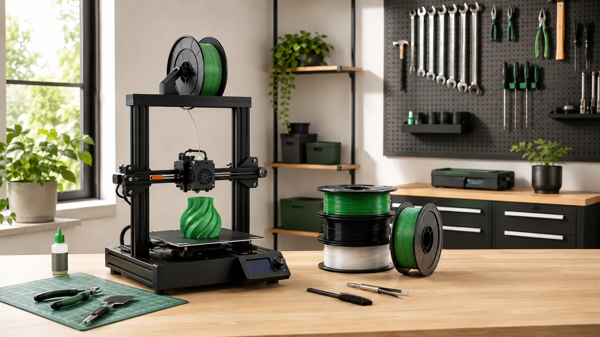
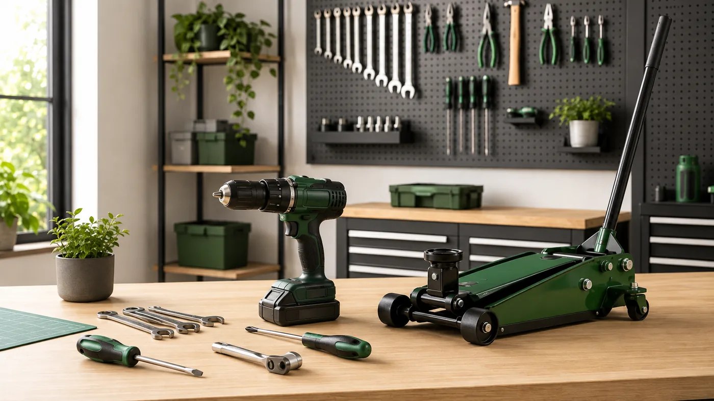
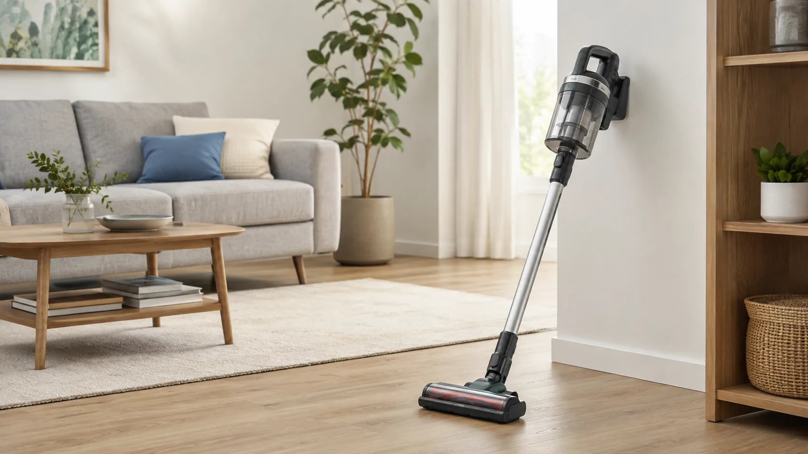
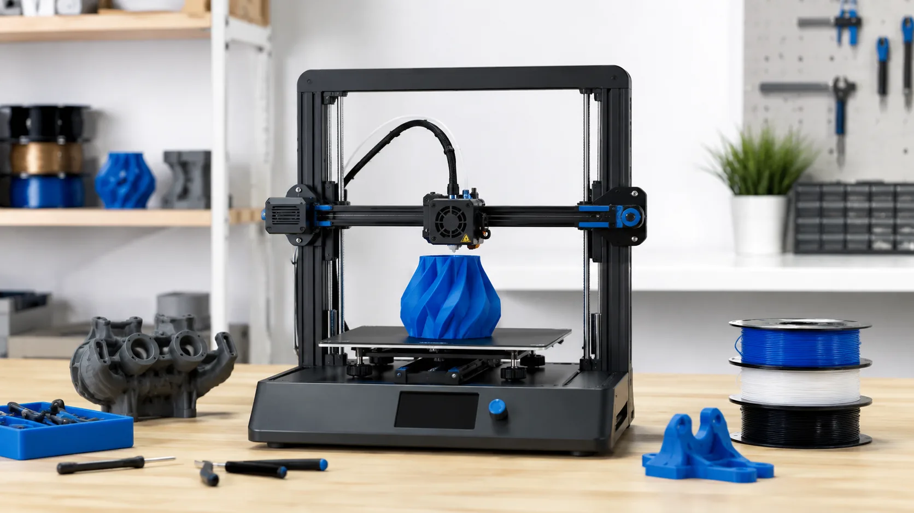
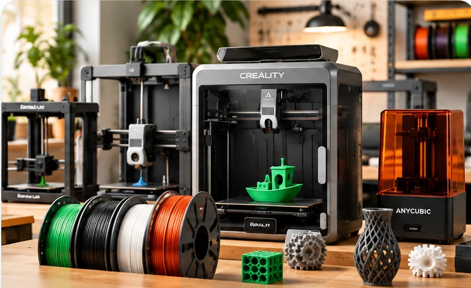
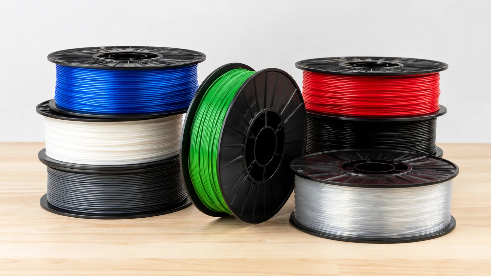
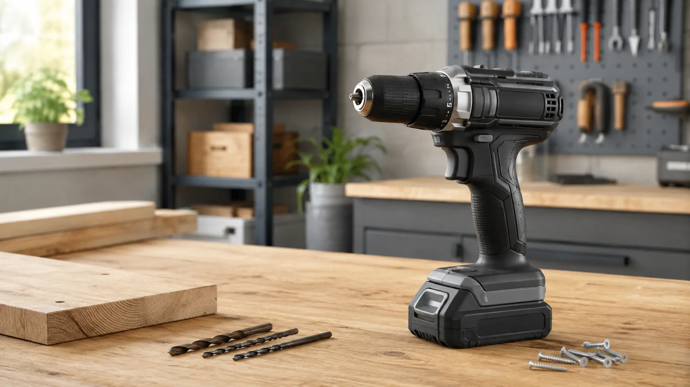
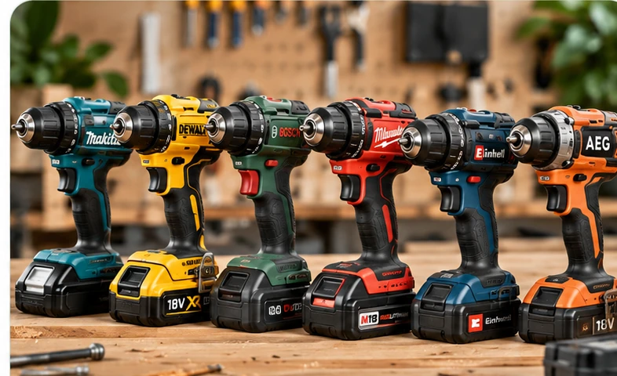
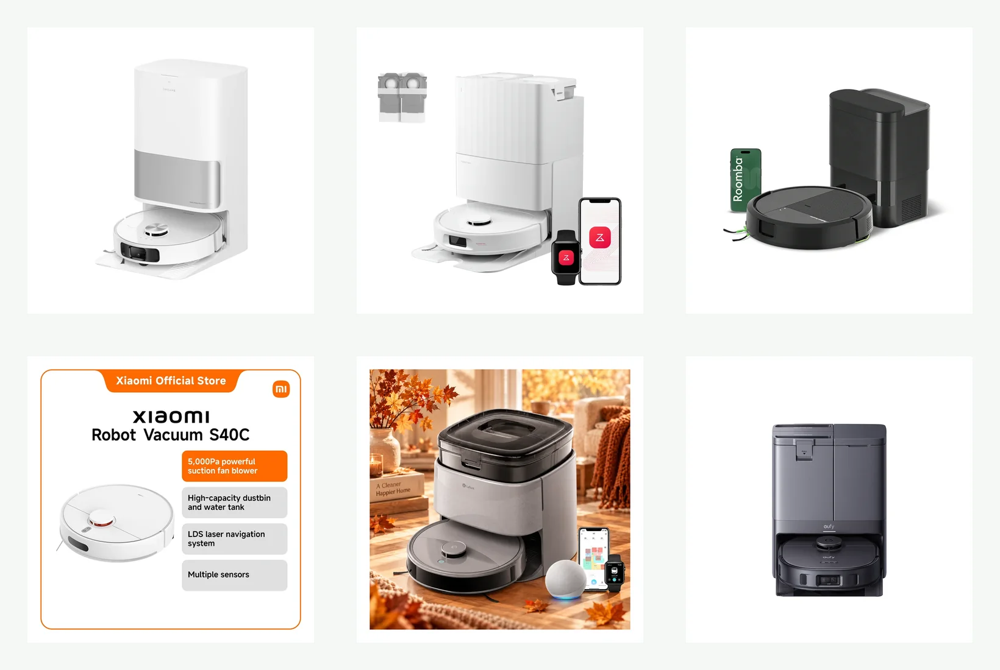
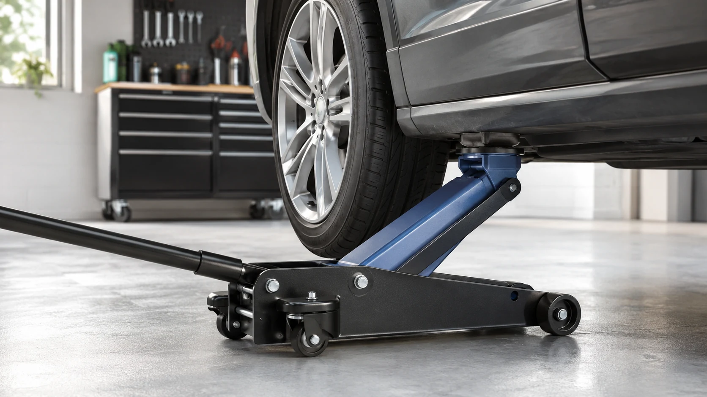

Impresión 3D
Impresoras, filamentos y accesorios
Guías para comparar impresoras FDM, materiales y accesorios según el tipo de proyecto y el nivel de uso.
Explorar categoría →Información clara para comparar productos, entender sus diferencias y elegir según el uso que realmente les vas a dar.
Analizamos productos de herramientas , impresión 3D y hogar teniendo en cuenta características, prestaciones, compatibilidad, facilidad de uso y limitaciones.
No buscamos un ganador universal. Intentamos explicar qué producto tiene sentido para cada uso, dónde están sus límites y qué dato de la ficha técnica merece realmente tu atención.
Contenido organizado por temática para llegar rápidamente a las comparativas y guías que necesitas.

Guías para comparar impresoras FDM, materiales y accesorios según el tipo de proyecto y el nivel de uso.
Explorar categoría →
Comparativas centradas en potencia, capacidad, equipamiento, compatibilidad y adecuación a cada trabajo.
Explorar categoría →
Guías prácticas para valorar autonomía, comodidad, mantenimiento y prestaciones en productos de uso diario.
Explorar categoría →Acceso directo a algunos de los contenidos principales publicados actualmente en Compra con Criterio.

Volumen, estructura, materiales compatibles, cámara cerrada y funciones que conviene revisar antes de elegir.
Ver guía →
Modelos FDM comparados según volumen, materiales, estructura, automatización y tipo de usuario.
Ver comparativa →
Diferencias entre PLA, PETG, ABS, ASA, TPU y otros materiales utilizados habitualmente en impresión FDM.
Ver filamentos →
Cómo valorar par, percusión, tipo de motor, plataforma de baterías y contenido del kit.
Ver guía →
Opciones orientadas a distintos niveles de uso, desde bricolaje doméstico hasta trabajos más frecuentes.
Ver comparativa →
Desde modelos con LiDAR y base de carga hasta estaciones que vacían, lavan y secan las mopas automáticamente.
Ver comparativa →
Comparación centrada en capacidad, altura mínima, elevación y adecuación para distintos tipos de vehículo.
Ver comparativa →Queremos que cada guía sirva para entender qué cambia realmente la decisión de compra.
Priorizamos especificaciones que ayudan a distinguir productos según su función y el tipo de usuario.
Señalamos puntos fuertes y aspectos que pueden hacer un producto menos adecuado para determinados usos.
Precios, versiones y disponibilidad pueden cambiar, por eso evitamos tratarlos como condiciones permanentes.
Consulta nuestras guías por categoría y compara los aspectos que realmente afectan al uso.